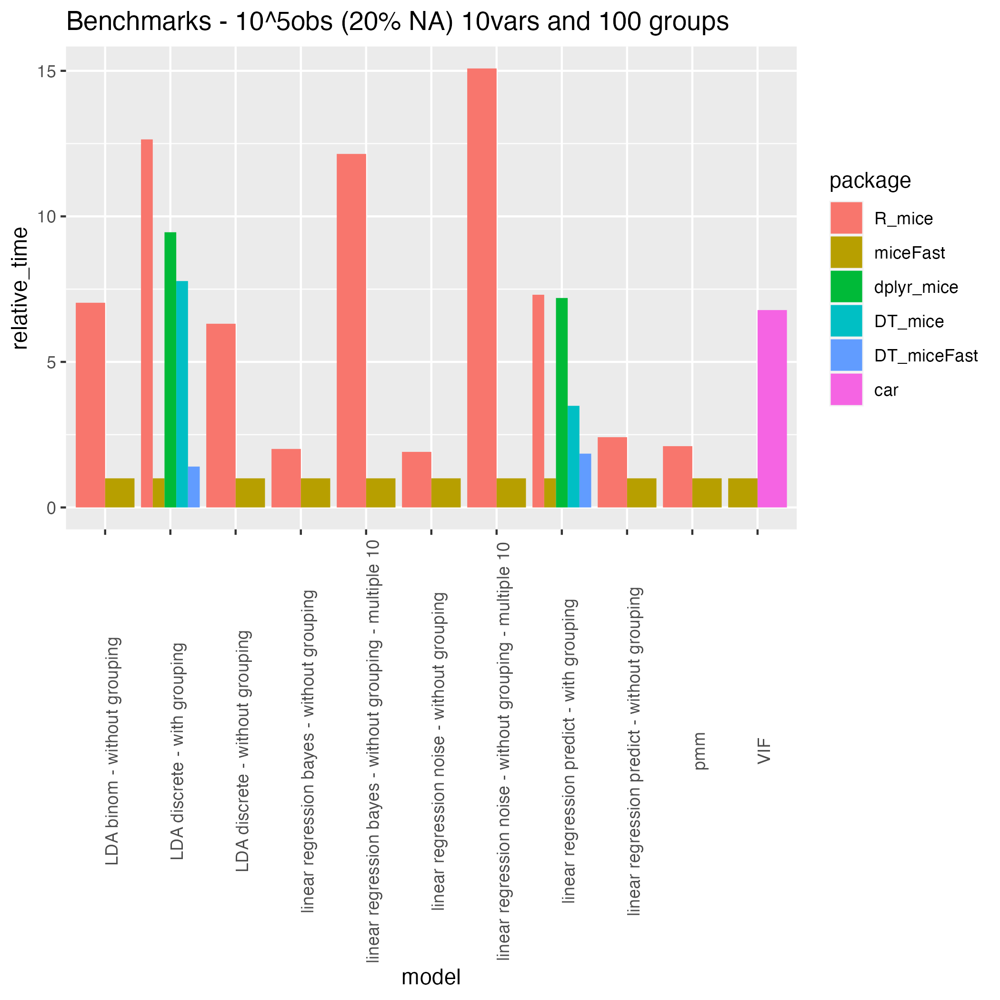

Maciej Nasinski
Check the miceFast website for more details


Fast imputations under the object-oriented programming paradigm.
Moreover there are offered a few functions built to work with popular R packages such as ‘data.table’ or ‘dplyr’. The biggest improvement in time performance could be achieve for a calculation where a grouping variable have to be used. A single evaluation of a quantitative model for the multiple imputations is another major enhancement. A new major improvement is one of the fastest predictive mean matching in the R world because of presorting and binary search.
Performance benchmarks (check performance_validity.R file at extdata).
Installation
install.packages('miceFast')or
# install.packages("devtools")
devtools::install_github("polkas/miceFast")Recommended to download boosted BLAS library, even x100 faster:
- Windows Users recommended to download MRO MKL: https://mran.microsoft.com/download
- Linux users recommended to download Optimized BLAS (linear algebra) library:
sudo apt-get install libopenblas-dev - Apple vecLib BLAS:
Quick Implementation
library(miceFast)
set.seed(1234)
data(air_miss)
# plot NA structure
upset_NA(air_miss, 6)
naive_fill_NA(air_miss)
#Check vignette for an advance usage
#there is required a thorough examination
#Other packages - popular simple solutions
#Hmisc
data.frame(Map(function(x) Hmisc::impute(x,'random'), air_miss))
#mice
mice::complete(mice::mice(air_miss, printFlag = F))Quick Reference Table
| Function | Description |
|---|---|
new(miceFast) |
OOP instance with bunch of methods - check vignette |
fill_NA() |
imputation - lda,lm_pred,lm_bayes,lm_noise |
fill_NA_N() |
multiple imputation - pmm,lm_bayes,lm_noise |
VIF() |
Variance inflation factor |
naive_fill_NA() |
auto imputations |
compare_imp() |
comparing imputations |
upset_NA() |
visualize NA structure - UpSetR::upset |
Summing up, miceFast offer a relevant reduction of a calculations time for:
- Linear Discriminant Analysis around (x5)
- where a grouping variable have to be used (around x10 depending on data dimensions and number of groups and even more than x100 although compared to data.table only a few k faster or even the same) because of pre-sorting by grouping variable
- multiple imputations is faster around x(a number of multiple imputations) because the core of a model is evaluated only ones.
- Variance inflation factors (VIF) (x5) because the unnecessary linear regression is not evaluated - we need only inverse of X’X
- Predictive mean matching (PMM) (x3) because of pre-sorting and binary search (
micealgorithm was improved too).

Environment: R 4.1.3 Mac M1
If you are interested about the procedure of testing performance and validity check performance_validity.R file at the extdata folder.